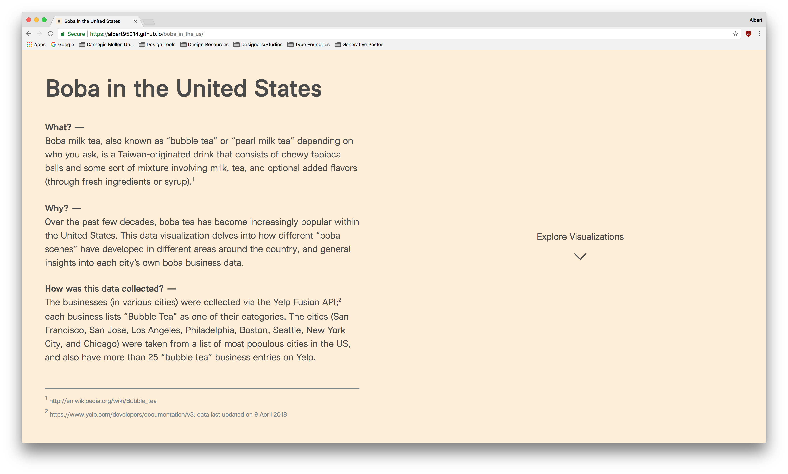
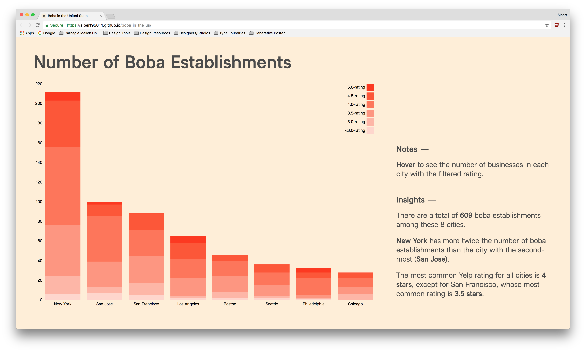
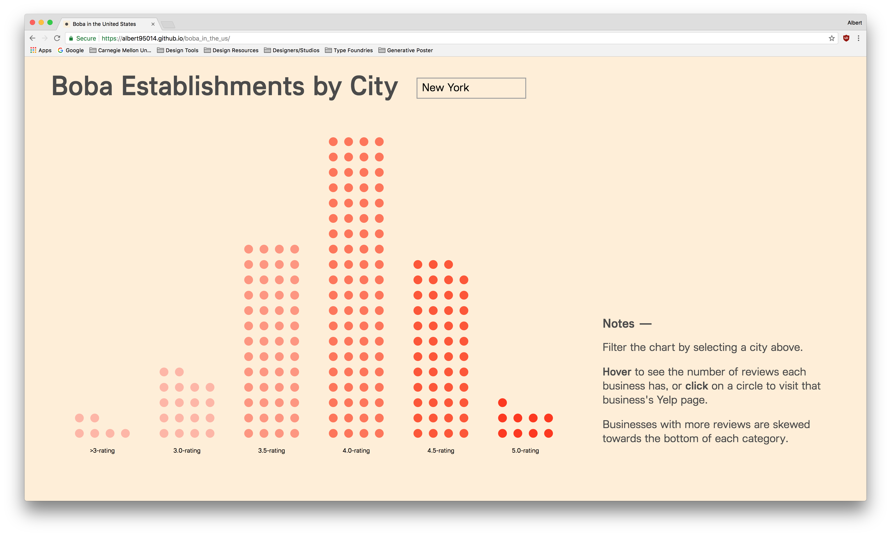
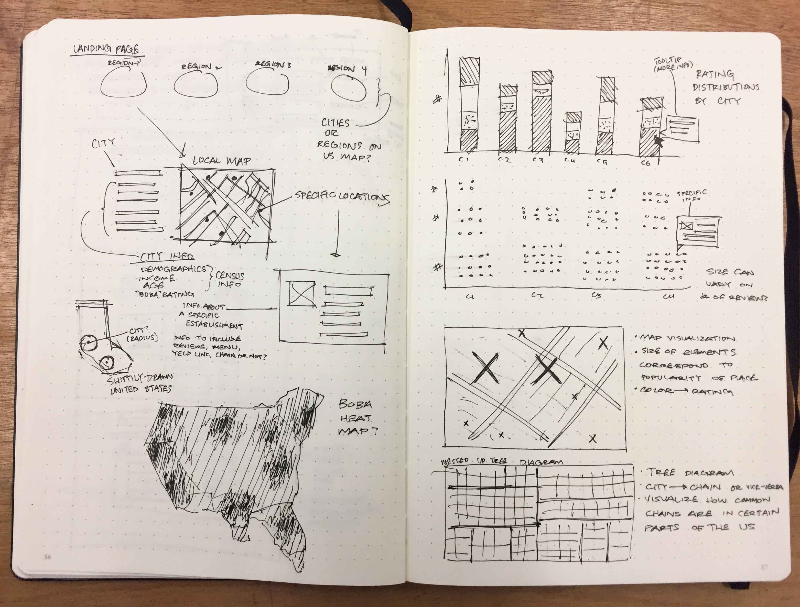
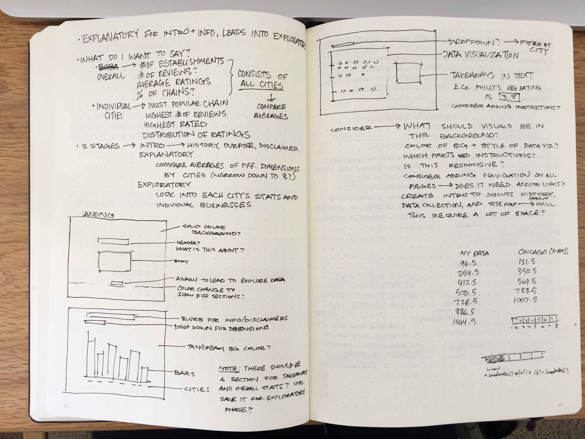
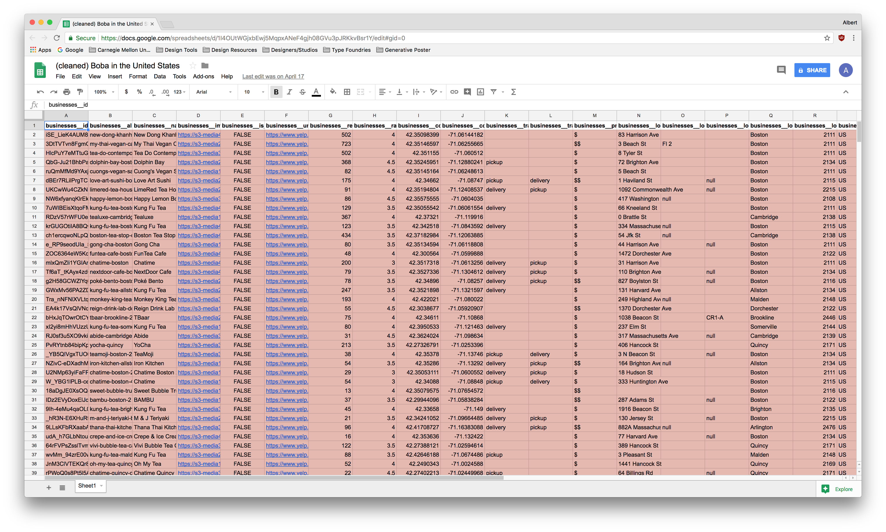
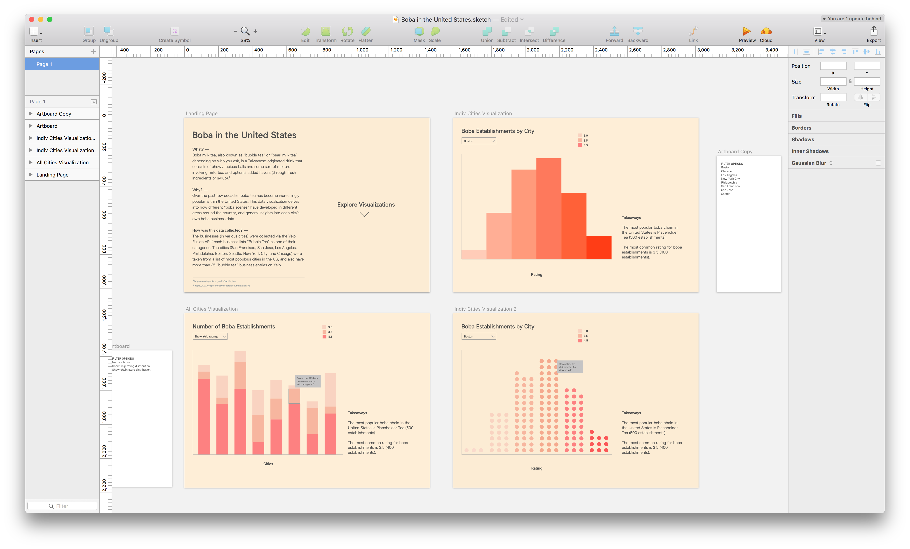

Boba in the United States
Data Visualization
April 2018
Contributions
Web Design
Coding (d3.js)
Visual Design
Wireframing
Data Collection
Data Cleaning
Overview
Boba tea, also known as pearl milk tea or bubble tea, is a Taiwanese-originated drink that has found increased popularity across the world in the past few decades. The goal for this visualization is to visualize how popular the drink is in different cities within the United States.
To visualize the data obtained from Yelp's Fusion API, I used d3.js to develop an interactive website, which can be found here.
The site currently only works for 15" screens and larger.



Beginning Process
Inspired by my boba-documenting Instagram, I wanted to see how easy it would be to find boba in various regions of the United States. I sketched a few potential ways of visualizing the data, which had been scraped using the Yelp Fusion API (returning every business in certain cities under the "Bubble Tea" category).


Data Collection and Cleaning
The data, which was originally returned in JSON format, contained a lot of categories that weren't as relevant to the story I was trying to tell. I cleaned up the data by adding and removing categories as necessary, and organizing them by city into various .csv files to work with separately.

Wireframing and Mock-ups
I used Sketch to create high-fidelity mock-ups of how I wanted the website to look. I originally used Yelp's yellow-to-red scale to visualize the ratings, but adding colors to differentiate a 3.0-rating versus a 3.5-rating made it difficult to see the difference. Considering the background and text color, inspired by the drink itself, it made sense to use a color scheme of light versus dark reds to make the data stand out more.

Post-Project Thoughts
Working with d3.js for the first time was challenging, yet rewarding to see how to present large datasets in an interactive way. Future steps would nvolve making the website more responsive, which presents the extra challenge of making my visualization scale up and down. Through the development of this website, I learned different ways I could tell a story using interactive data visualizations, as well as how to guide users through what I wanted to say with the data.
© Albert Yang 2018